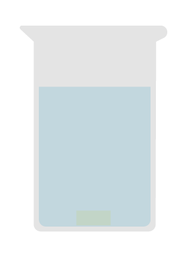
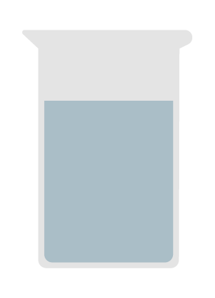
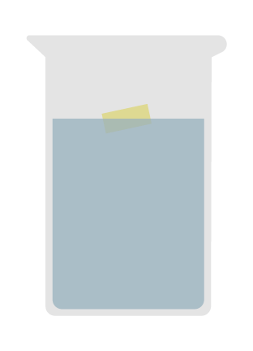
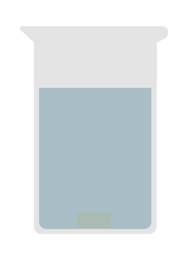
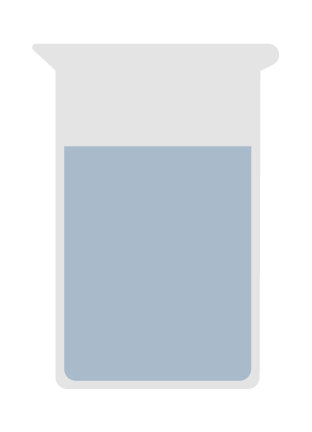
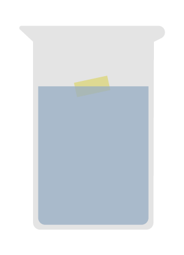
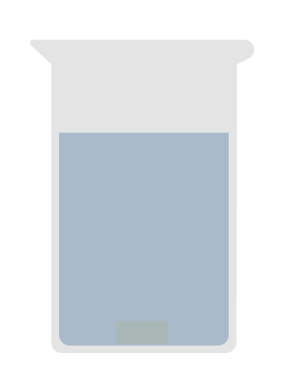
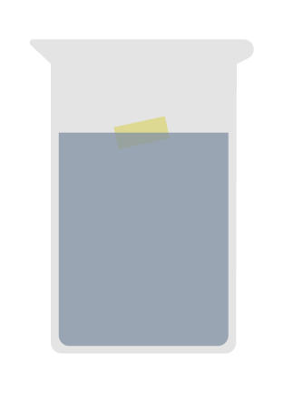

Adicione a sua amostra de plástico no copo com a solução de cloreto de sódio (d = 1,2 g/cm³) usando uma pinça. Mexa e verifique se o plástico afunda ou não afunda.
Solução de cloreto de sódio (35,8 g/100 mL)
d=1,2g/cm³

Água destilada
d=1,0g/cm³


2ºTeste
Seque bem o plástico e coloque no copo com a água destilada (d = 1,0 g/cm³) usando uma pinça diferente. Mexa e verifique se o plástico afunda ou não afunda.
Água destilada
d=1,0g/cm³

Solução etanólica 51%
d=0,93g/cm³


3ºTeste
Seque bem o plástico e coloque no copo com a solução de etanólica de 51% (d = 0,93 g/cm³) usando uma pinça diferente. Mexa e verifique se o plástico afunda ou não afunda.
Solução etanólica 51%
d=0,93g/cm³

Solução etanólica 60%
d=0,91g/cm³

4ºTeste
Seque bem o plástico e coloque no copo com a solução etanólica 60% (d = 0,91 g/cm³) usando uma pinça diferente. Mexa e verifique se o plástico afunda ou não afunda